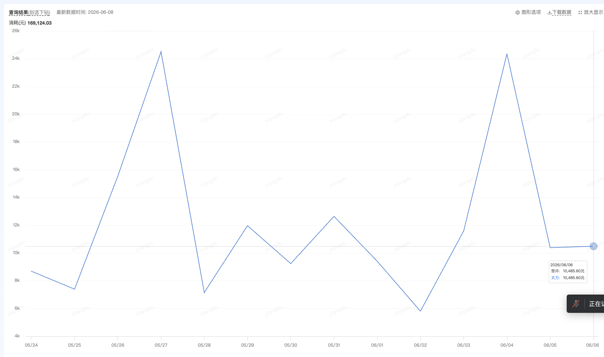

销售真正卡住的，是"从数据到动作"这一段。它卡在三个地方，共同的后果就是——总是被动响应、还容易漏球：
三个一级 Tab，覆盖"看进度 / 做动作 / 给弹药"三件事：
每个 Tab 对应一个业务场景。下面是完整能力清单—— ✅ 已上线 🆕 本期新增 ⏳ 待建设
| 子模块 | 能力 / 内容 | 状态 |
|---|---|---|
| 今日待办清理进度 | 告警+关注客户拢成一条可清零待办，已处理/总数，云端实时 | 🆕 本期新增 |
| 关键客户作战台 | 生命周期视角（新手/培育/成熟期）+ 考核追赶视角（潜在新锐/重点客户监控） | 🆕 本期新增 |
| 客户明细清单 | 多维筛选（分组/类目/战役）+ 一键诊断 + 标记已处理闭环留痕 | ✅ 已上线 |
| 团队季度 KPI 进度 | 季度新锐数 / 新客季度日耗，91 天倒计时算缺口 | ✅ 已上线 |
| 子模块 | 能力 / 内容 | 状态 |
|---|---|---|
| 新客录入 | 统一登记入口 + 系统自动识别简称/打标 + 归属变更留痕 | ✅ 已上线 |
| 拓客来源分布 | 类目 / 客户来源 / 投放端 / 链路画像（按数量或消耗占比） | ✅ 已上线 |
| 客户消耗分布 | KPI 进度盘 + 7 销售明细横向对比 | ✅ 已上线 |
| 客户明细 · 投放走势 | 单客户消耗趋势曲线、逐日走势 | ⏳ 待建设 |
| 客户生命周期全视 | 客户流失 / 跃迁 / 掉量的全周期状态流转 | ⏳ 待建设 |
| 子模块 | 能力 / 内容 | 状态 |
|---|---|---|
| 新客政策 | 平台政策 & 营销活动实时同步，缩略图 + 上下线管理 | 🆕 本期新增 |
| 行业信息 | 服饰大盘 + 10 个二级行业指标 + Top3 客户参考 | 🆕 本期新增 |
| 活动信息 / 标杆案例 | 优秀新客案例 & 起量打法，按类目 / 链路检索 | 🆕 本期新增 |
| 产品能力 | ADQ 服饰投放产品矩阵介绍 & 对外文档 | ⏳ 待建设 |
三个 Tab 对应销售一天的完整动线——📌 今日待办解决"今天处理谁"、🚀 拓客看板解决"进度与底表"、📚 信息同步库解决"对客户讲什么"。下面一张图讲透每个 Tab 的核心模块与产出：
这个案例最能说明看板的价值：它不只是发现问题，还顺手把"找原因"这一步接到了 AI 上。

⚠ 5.28-6.2 掉量 ✓ 加投后回升无论是对内防漏、抓机会，还是对外赋能，背后都是同一个四步闭环——把"业务规则"翻译成"动作机制"。
没有数据库、没有后端服务、不依赖 BI 平台。整套是 Python 脚本 + 静态前端，每天一条命令跑完重建，产物直接推 GitHub Pages。下面是端到端的真实链路：
window.__XXX__=JSON 的 .js前端 <script> 直接引静态托管也能"动态"展示
不是要更多人手堆活，而是把几个"卡住规模化"的关键点打通——让这套已经验证有效的机制，能稳定服务整个团队。
沿着现有的三个 Tab，往"少一步人工、多一步自动"的方向迭代——